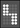

|
|
| Sie nähern sich dem angekündigten Ausfahrsignal des Bahnhofs Langeland. Es kann drei verschiedene Signalbilder geben: |
 Halt.
Halten Sie vor dem Signal und warten Sie auf Fahrt. Sie
sollten jetzt ca. 40km/h schnell sein,
um rechtzeitig vor dem Signal zum stehen zu kommen.
Passen Sie ggf. die Bremskraft an (Bremskraft
erhöhen, Bremskraft
verringern) Halt.
Halten Sie vor dem Signal und warten Sie auf Fahrt. Sie
sollten jetzt ca. 40km/h schnell sein,
um rechtzeitig vor dem Signal zum stehen zu kommen.
Passen Sie ggf. die Bremskraft an (Bremskraft
erhöhen, Bremskraft
verringern) |
 Langsamfahrt mit 40km/h. Langsamfahrt mit 40km/h.
Fahren Sie ab dem Signal bis der gesamte Zug die Freie Strecke erreicht hat maximal 40km/h. (Ihr Zug ist 150m lang.) Anschließend können Sie auf Streckengeschwindigkeit beschleunigen (hier 80km/h). |
 Langsamfahrt mit 60km/h,
da weiße Leuchtziffer 6. Langsamfahrt mit 60km/h,
da weiße Leuchtziffer 6. Fahren Sie ab dem Signal bis der gesamte Zug die Freie Strecke erreicht hat maximal 60km/h. (Ihr Zug ist 150m lang.) Anschließend können Sie auf Streckengeschwindigkeit beschleunigen (hier 80km/h). |
 Zusätzlich kann noch ein Gleiswechselanzeiger aufleuchten, der mitteilt, dass die Fahrt auf dem Gegengleis (linkes Gleis der freien Strecke) weitergeht. |